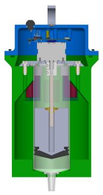
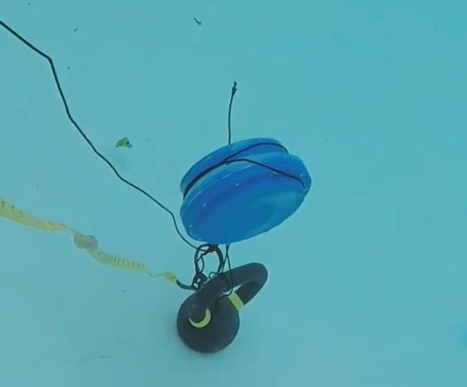
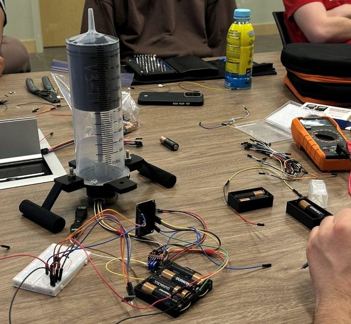

PERRY
Pressure Equipped Robot for Research and Yield
Project Overview
PERRY autonomously descended to 2.5 m and logged pressure, temperature, and time data. It competed at the 2025 MATE ROV World Championship. As Float Lead, I led a 4-person team and designed PERRY’s bespoke watertight housing and buoyancy engine.

Buoyancy Engine
PERRY's propulsion is driven by an internal buoyancy engine that mechanically changes its density by modulating the water volume inside a 500 mL plastic syringe. A Creality 42-34 stepper motor, coupled to a lead screw and nut assembly salvaged from a 3D printer, drives the plunger to expel and pull in water. This system was selected for its capability to deliver the power and precision needed for controlled displacement.

Multi-Stage Waterproofing Strategy
I developed the multi staged waterproofing system to ensure protection of internal electronics.
Main Housing Lid
The main housing lid utilizes a PTFE O-ring coated in silicone grease, set in a flange seal calculated for 25% compression to ensure a watertight bond.
Bottom Plunger Seal
The buoyancy engine mechanism compresses a PTFE gasket at the base of the chassis to prevent water ingress around the plunger mechanism.
Material Permeability
I utilized acetone flash vapor smoothing to address the inherent porosity of ABS printed parts. This process fused the outer layer lines, creating a watertight shell, effectively mitigating permeability and preventing water seepage into the enclosure.

